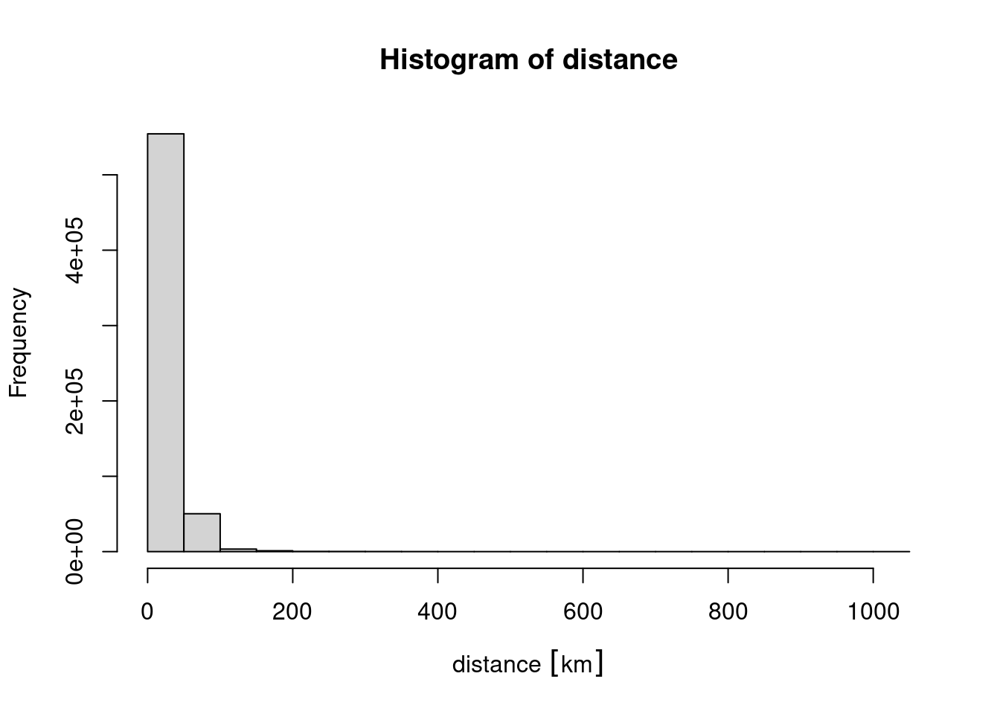
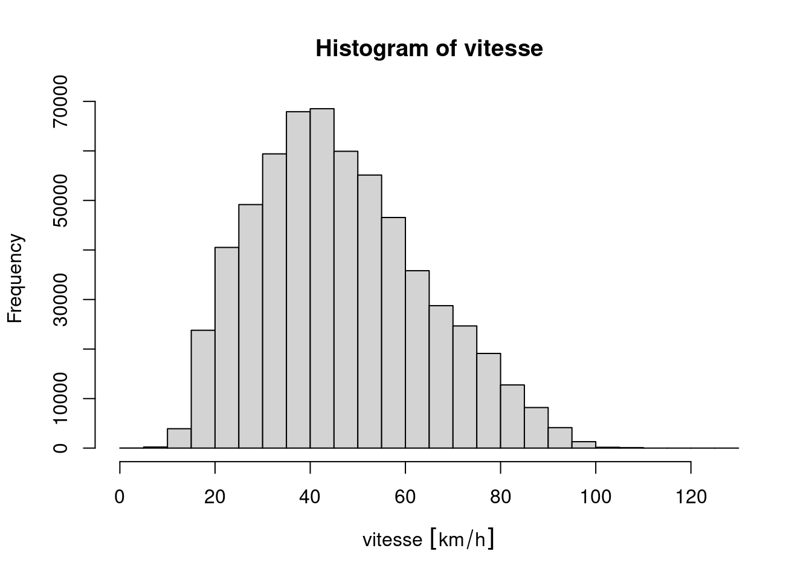
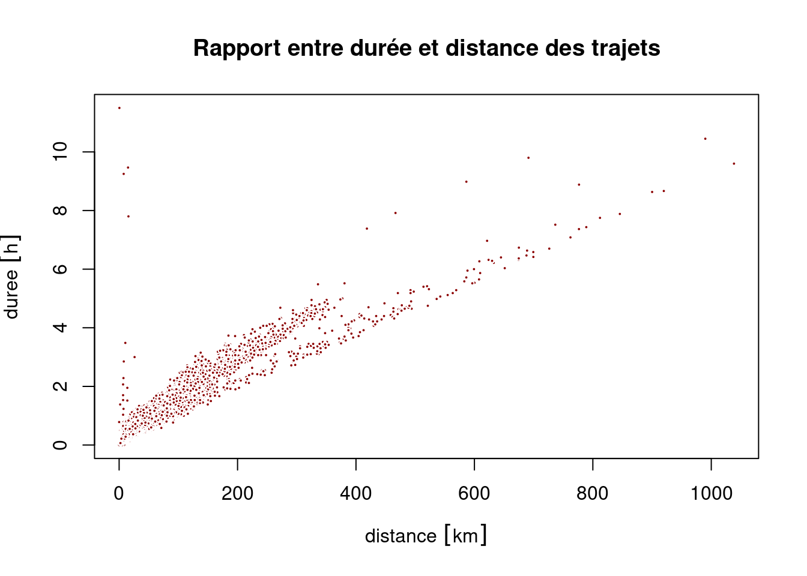
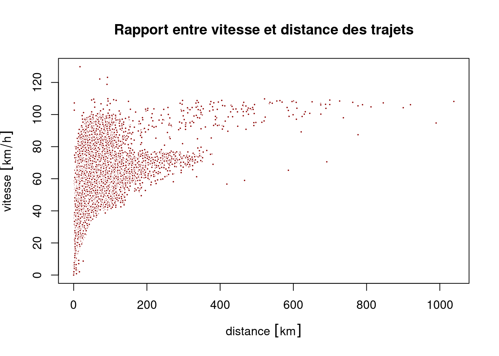
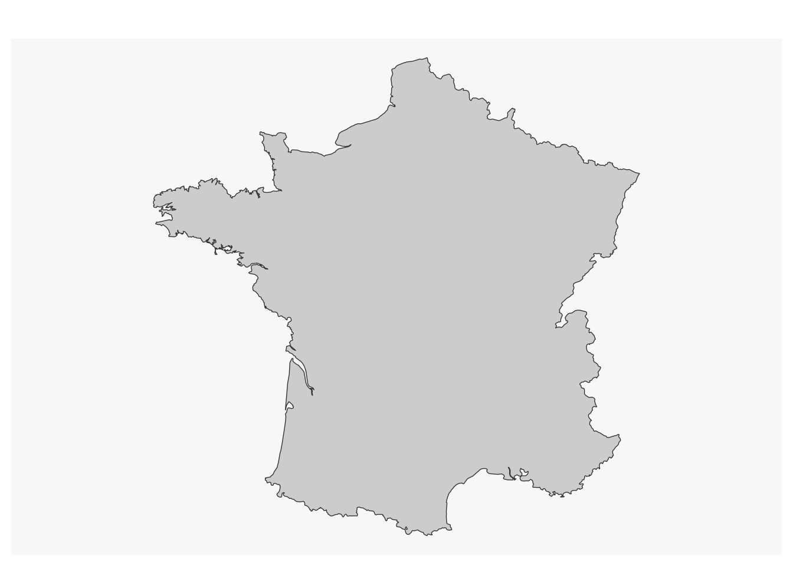
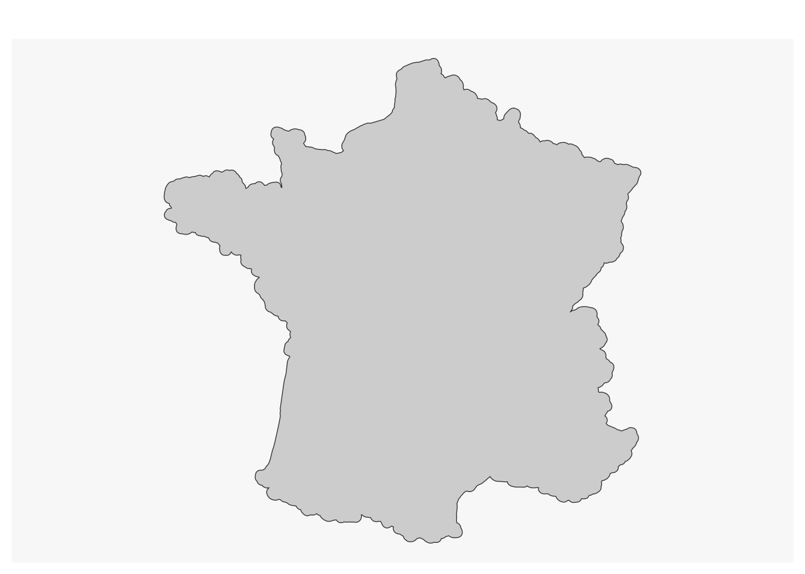
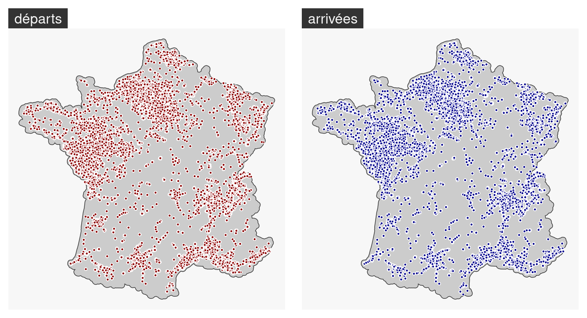
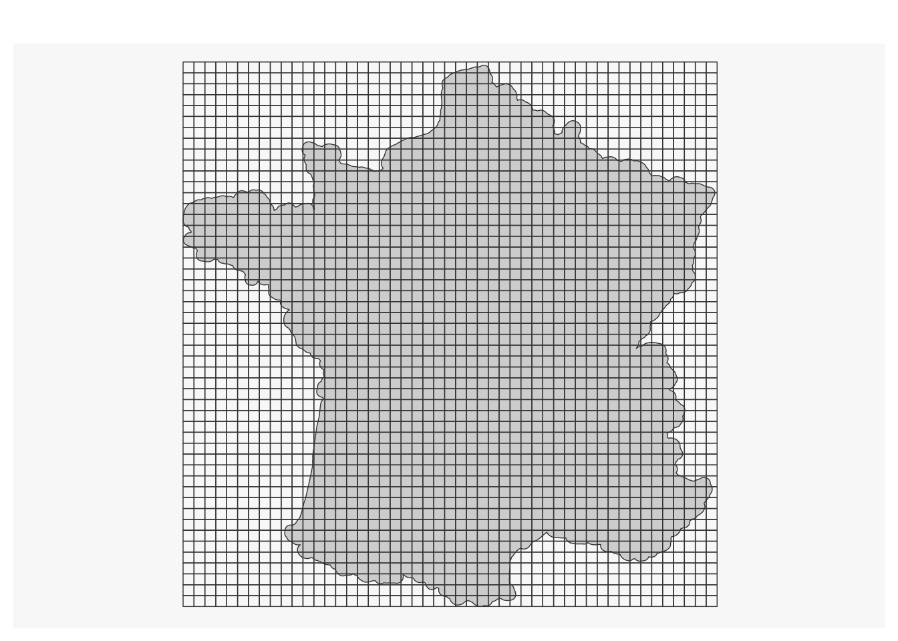
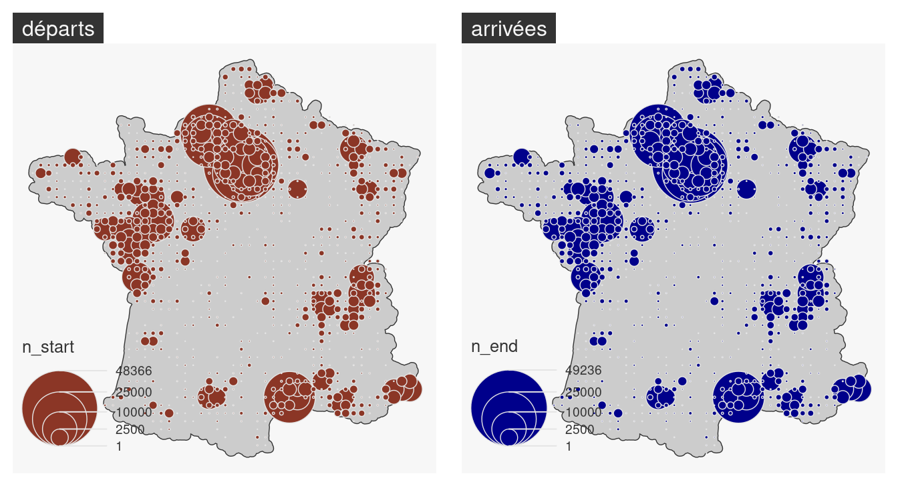
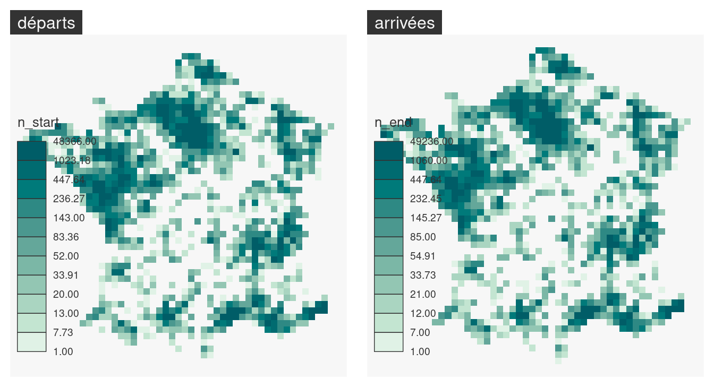

dir.create("data-raw")
# cov_2022_10 <- "https://www.data.gouv.fr/fr/datasets/r/80b38046-8166-49fd-bbee-fc0ba9612a88"
# download.file(cov_2022_10, destfile = "data-raw/cov_2022_10.csv")Faire des carte avec le logiciel libre R
Journée d’étude ‘La boîte à outils de cartographie et de géovisualisation de données : regards croisés de chercheurs’
Timothée Giraud ![]()
Quarto
Historique et principes de l’outil utilisé
Fonctionnalités principales
Usages actuels (montrer quelques supers exemples)
Vos usages de cet outil (quelques exemples de vos réalisations)
Préparation des données
Modes de représentations (cartes et graphiques)
Mode d’interactions avec les données
Usages potentiels qu’on a pas eu le temps d’explorer
Bilan personnel de l’outil (forces et limites) dans l’offre actuelle
Préparation des données
Téléchargement des données
cov_2022_09 <- "https://www.data.gouv.fr/fr/datasets/r/513862ee-8e8e-426b-9b67-7a4e39ab253a"
download.file(cov_2022_09, destfile = "data-raw/cov_2022_09.csv")Import des données
cov_raw <- read.csv(file = "data-raw/cov_2022_10.csv", sep = ";")# head(cov_raw)Selection
Sélection des covoit depuis l’Occitanie vers l’Occitanie
# occitanie <- c("46", "12", "48", "30",
# "34", "81", "82", "32",
# "31", "65", "09", "66", "11")
# length(occitanie)
# cov <- cov_raw[
# cov_raw$journey_start_department %in% occitanie &
# cov_raw$journey_end_department %in% occitanie,
# ]
# nrow(cov)
cov <- cov_rawAnalyse
Analyse des durées, distances et vitesses
Calcul des indicateurs, gestion des unités de mesure
duree <- cov$journey_duration
distance <- cov$journey_distance
library(units)udunits database from /usr/share/xml/udunits/udunits2.xmlunits(distance) <- "m"
units(duree) <- "min"
distance <- set_units(distance, "km")
duree <- set_units(duree, "h")
vitesse <- distance / dureeReprésentations
hist(duree)
hist(distance)
hist(vitesse)
plot(x = distance, y = duree,
main = "Rapport entre durée et distance des trajets",
pch = 21, cex = .4, col = "white", bg = "darkred")
plot(x = distance, y = vitesse,
main = "Rapport entre vitesse et distance des trajets",
pch = 21, cex = .4, col = "white", bg = "darkred")
Analyse des points de départ et d’arrivée
library(sf)Linking to GEOS 3.9.0, GDAL 3.2.2, PROJ 7.2.1; sf_use_s2() is TRUElibrary(mapsf)
library(rnaturalearth)
w <- ne_countries(scale = 10,type = "countries", country = "France", returnclass = "sf" )
ww <- st_cast(x = w, "POLYGON")Warning in st_cast.sf(x = w, "POLYGON"): repeating attributes for all
sub-geometries for which they may not be constantww$areas <-st_area(ww)
fra <- ww[order(ww$areas, decreasing = T), ][1,]
mf_map(fra)
fra <- st_transform(fra, 'EPSG:2154')
fra <- st_buffer(fra, 10000)
mf_map(fra)
start <- st_as_sf(cov,
coords = c("journey_start_lon", "journey_start_lat"),
crs = "EPSG:4326")
end <- st_as_sf(cov,
coords = c("journey_end_lon", "journey_end_lat"),
crs = "EPSG:4326")
start <- st_transform(start, "EPSG:2154")
end <- st_transform(end, "EPSG:2154")
start <- start[st_intersects(start, fra, sparse = FALSE),]
end <- end[st_intersects(end, fra, sparse = FALSE),]
par(mfrow = c(1,2))
mf_map(fra)
mf_map(start, add = T, pch = 21, cex = .4, col = "white", bg = "darkred")
mf_title("départs")
mf_map(fra)
mf_map(end, add = T, pch = 21, cex = .4, col = "white", bg = "darkblue")
mf_title("arrivées")
g <- st_make_grid(x = fra, cellsize = 20000)
g <- st_as_sf(g)
mf_map(fra)
mf_map(g, add = T, col = NA)
g <- g[fra, ]
inter <- st_intersects(g, start, sparse = TRUE)
g$n_start <- sapply(X = inter, FUN = length)
g$n_end <- st_intersects(g, end, sparse = TRUE) |>
sapply(length)par(mfrow = c(1,2))
mf_map(fra)
mf_map(g, var = "n_start", "prop", add = T,
val_max = 50000, border = "grey90")647 '0' values are not plotted on the map.mf_title("départs")
mf_map(fra)
mf_map(g, var = "n_end", "prop", add = T,
val_max = 50000, col = "darkblue", border = "grey90")664 '0' values are not plotted on the map.mf_title("arrivées")
par(mfrow = c(1,2))
mf_map(g, var = "n_start", "choro", border = NA)
mf_title("départs")
mf_map(g, var = "n_end", "choro", border = NA)
mf_title("arrivées")